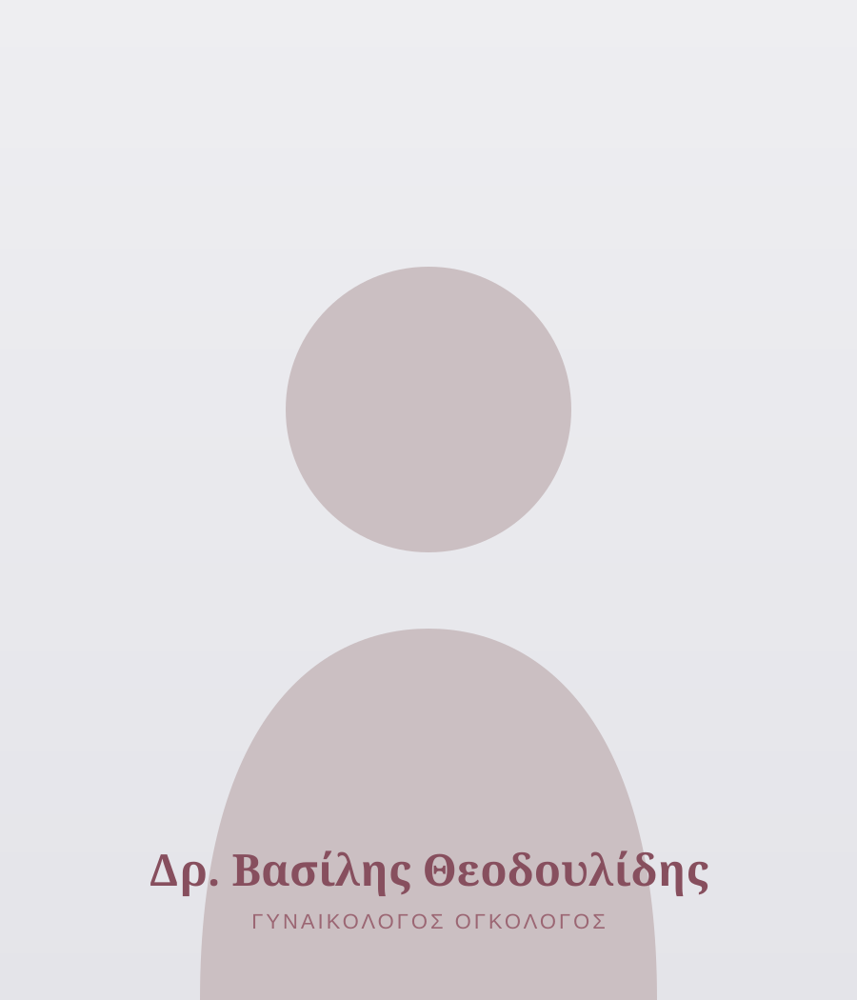
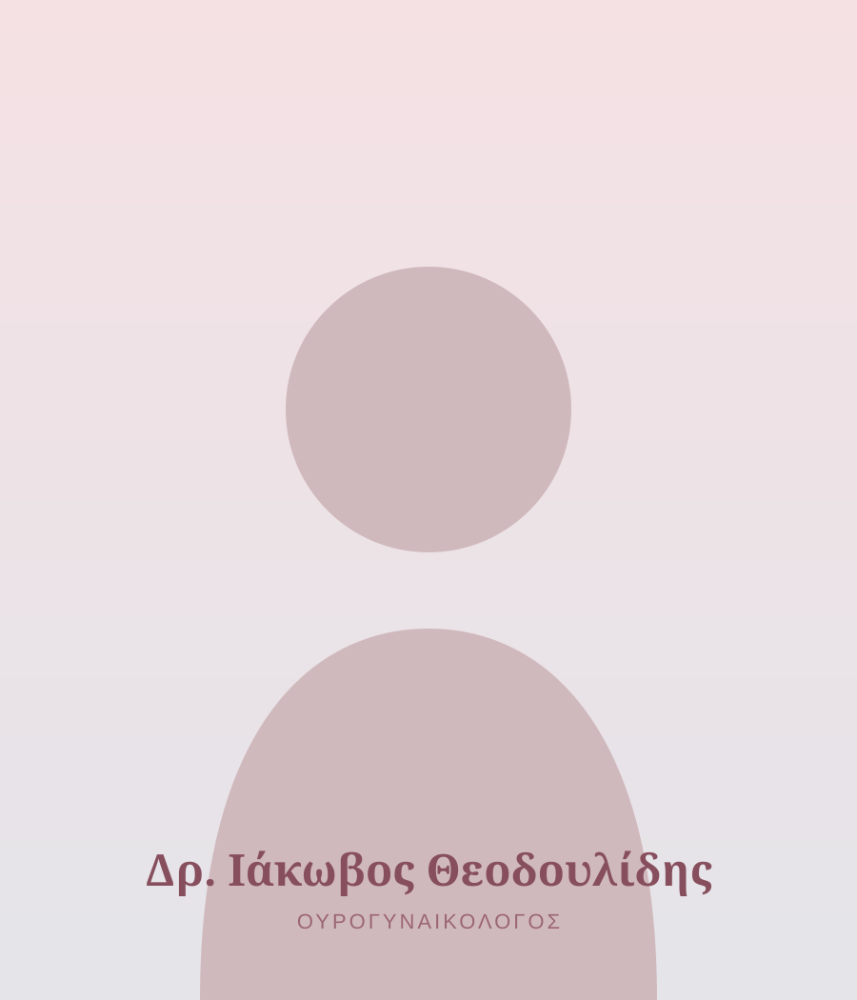

Οι Ιατροί
Εξειδίκευση, εμπειρία & ανθρώπινη φροντίδα
Δύο Μαιευτήρες — Γυναικολόγοι με ακαδημαϊκή κατάρτιση, διεθνείς εξειδικεύσεις και κοινή φιλοσοφία: την εξατομικευμένη φροντίδα κάθε γυναίκας.

Γυναικολογικής Ογκολογίας
Ο Ιατρός
Δρ. Βασίλης Θεοδουλίδης
Μαιευτήρας — Γυναικολόγος · Γυναικολόγος Ογκολόγος
Ο Θεοδουλίδης Βασίλειος είναι Μαιευτήρας — Γυναικολόγος με εξειδίκευση στη Γυναικολογική Ογκολογία. Διατηρεί ιδιωτικό ιατρείο στο κέντρο της Θεσσαλονίκης και είναι συνεργάτης ιατρός στο Ιατρικό Διαβαλκανικό Κέντρο, στην Ιδιωτική Κλινική Γένεσις και στη Γενική Κλινική Euromedica.
Παράλληλα, κατέχει θέση Επιμελητή Β΄ στο Γυναικολογικό — Ογκολογικό Τμήμα της Α΄ Μαιευτικής — Γυναικολογικής Κλινικής του Αριστοτελείου Πανεπιστημίου Θεσσαλονίκης (Α.Π.Θ.) στο Γενικό Νοσοκομείο «Παπαγεωργίου».
Μετεκπαιδεύτηκε στη Γυναικολογική Ογκολογία στην Α΄ Μαιευτική — Γυναικολογική Κλινική του Εθνικού και Καποδιστριακού Πανεπιστημίου Αθηνών (Ε.Κ.Π.Α.), στο Πανεπιστημιακό Γενικό Νοσοκομείο Αθηνών «Αλεξάνδρα» (ESGO). Εξειδικεύτηκε στην Κολποσκόπηση και Παθολογία Τραχήλου Μήτρας (BSCCP), καθώς και στη Λαπαροσκοπική και Υστεροσκοπική Χειρουργική (ESGE).
Είναι κάτοχος Μεταπτυχιακού Διπλώματος Ειδίκευσης (MSc) «Medical Research Methodology» και Υποψήφιος Διδάκτορας της Ιατρικής Σχολής του Α.Π.Θ. Διδάσκει σε τρία μεταπτυχιακά προγράμματα της Ιατρικής Σχολής Α.Π.Θ. και διαθέτει πλούσιο συγγραφικό έργο σε διεθνή ιατρικά περιοδικά, ενώ μετέχει και στη συγγραφή διεθνών κατευθυντήριων οδηγιών της Ευρωπαϊκής Εταιρείας Γυναικολογικής Ογκολογίας (ESGO).
Διαθέτει εξαιρετική χειρουργική και κλινική εμπειρία στη Γυναικολογική Ογκολογία, την Ενδοσκοπική Χειρουργική, την Κολποσκόπηση και τη Μαιευτική, καθώς και ευρύ ερευνητικό και ακαδημαϊκό έργο.

Ουρογυναικολογίας
Ο Ιατρός
Δρ. Ιάκωβος Θεοδουλίδης
Μαιευτήρας — Γυναικολόγος · Ουρογυναικολόγος
Ο Θεοδουλίδης Ιάκωβος είναι Μαιευτήρας — Γυναικολόγος με εξειδίκευση στην Ουρογυναικολογία. Διατηρεί ιδιωτικό ιατρείο στο κέντρο της Θεσσαλονίκης και είναι συνεργάτης ιατρός στο Ιατρικό Διαβαλκανικό Κέντρο, στην Ιδιωτική Κλινική Γένεσις και στη Βιοκλινική Θεσσαλονίκης.
Παράλληλα, κατέχει θέση Επιμελητή Β΄ στο Ουρογυναικολογικό Τμήμα της Α΄ Μαιευτικής — Γυναικολογικής Κλινικής του Αριστοτελείου Πανεπιστημίου Θεσσαλονίκης (Α.Π.Θ.) στο Γενικό Νοσοκομείο «Παπαγεωργίου».
Μετεκπαιδεύτηκε στην Ουρογυναικολογία και στις Παθήσεις Πυελικού Εδάφους στην Α΄ Μαιευτική — Γυναικολογική Κλινική Α.Π.Θ. στο Γενικό Νοσοκομείο «Παπαγεωργίου» (EUGA). Εξειδικεύτηκε στη Λαπαροσκοπική και Υστεροσκοπική Χειρουργική (ESGE).
Είναι κάτοχος Μεταπτυχιακού Διπλώματος Ειδίκευσης (MSc) και Υποψήφιος Διδάκτορας της Ιατρικής Σχολής του Αριστοτελείου Πανεπιστημίου Θεσσαλονίκης.
Διαθέτει εξαιρετική χειρουργική και κλινική εμπειρία στην ουρογυναικολογία, την ενδοσκοπική χειρουργική, την αισθητική γυναικολογία και τη μαιευτική, καθώς και ευρύ ερευνητικό και ακαδημαϊκό έργο.
Η Φιλοσοφία μας
Επιστημονική εξειδίκευση, καινοτόμες μέθοδοι και απόλυτος σεβασμός στην κάθε γυναίκα — μαζί σε όλο το ταξίδι.Specialized Women's Care · Θεσσαλονίκη